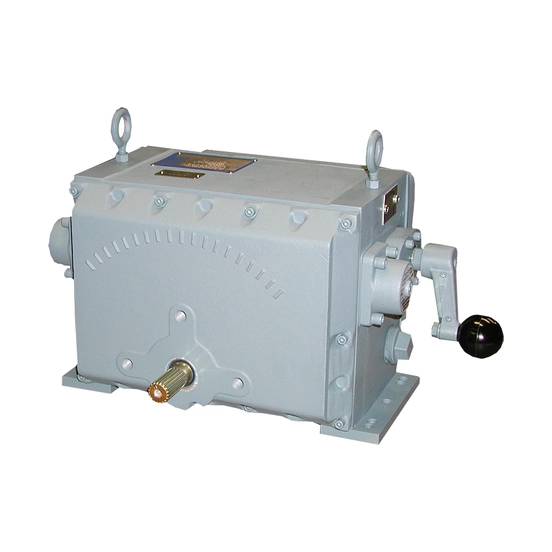

SM là dòng actuator rotary điều khiển chính xác của Rotork cho damper, vane và valve cần modulating liên tục. Dòng này gồm SM-1700/SM-5000 (tiêu chuẩn) và SM-6000 (heavy-duty, torque cao). Bài viết trình bày sự khác biệt đã xác nhận giữa hai nhóm và tiêu chí chọn theo torque, tốc độ và tín hiệu điều khiển cho ứng dụng tải lớn tại Việt Nam.

Trả lời nhanh
- SM-1700/SM-5000: actuator rotary modulating liên tục, định vị chính xác cho damper/vane/valve; torque cụ thể theo model cần xác nhận riêng.
- SM-6000: heavy-duty, torque tối đa 35.251 Nm (26.000 lbf.ft), góc quay tới 313°, tự động giới hạn torque và tự khóa vị trí.
- SM-6000 có tùy chọn giao tiếp HART, PROFIBUS và Foundation Fieldbus.
- SM-6000 tự khóa chống backdriving tới 125% torque định mức.
- Nếu ứng dụng cần torque rất cao và tốc độ cao, ưu tiên xem xét SM-6000; nếu chỉ cần modulating tiêu chuẩn, SM-1700/SM-5000 là lựa chọn phù hợp.
SM Range là gì
SM-1700/SM-5000 là actuator rotary với modulating liên tục, phù hợp ứng dụng cần định vị chính xác cho damper, vane, valve và các ứng dụng điều khiển quá trình khác. SM-6000 là bản heavy-duty, dẫn động nội bộ (internally geared) sản sinh torque tới 35.251 Nm, modulating liên tục không hạn chế, có tính năng tự động giới hạn torque và hệ dẫn động self-locking giữ vị trí cuối cùng, thiết kế cho ứng dụng cần tốc độ cao, torque cao và định vị chính xác.
Bảng so sánh SM-1700/SM-5000 và SM-6000
| Tiêu chí | SM-1700/SM-5000 | SM-6000 |
|---|---|---|
| Phân loại | Rotary tiêu chuẩn | Rotary heavy-duty |
| Torque tối đa | Chưa công bố trên trang tổng quan — cần đối chiếu PUB050-001 | 35.251 Nm (26.000 lbf.ft) |
| Góc quay | Chưa xác nhận trên trang tổng quan | Tới 313° |
| Tự khóa vị trí | Chưa xác nhận trên trang tổng quan | Có, chống backdriving tới 125% torque định mức |
| Giao tiếp | Chưa xác nhận trên trang tổng quan | HART, PROFIBUS, Foundation Fieldbus |
| Nguồn điện | Chưa xác nhận trên trang tổng quan | 1-pha hoặc 3-pha |
Tiêu chí chọn giữa SM-1700/5000 và SM-6000
- Torque yêu cầu: nếu ứng dụng cần torque rất cao (tới hàng chục kNm) và tốc độ cao, SM-6000 là lựa chọn đã xác nhận đáp ứng tới 35.251 Nm.
- Modulating tiêu chuẩn: nếu chỉ cần định vị chính xác cho damper/vane/valve ở mức tải thông thường, SM-1700/SM-5000 phù hợp — cần xác nhận torque cụ thể theo model trước khi chốt cấu hình.
- Yêu cầu chống backdriving: SM-6000 tự khóa tới 125% torque định mức; với SM-1700/SM-5000 cần xác nhận riêng với Rotork hoặc nhà cung cấp.
- Tích hợp hệ thống: nếu cần giao tiếp PROFIBUS hoặc Foundation Fieldbus, xác nhận theo model cụ thể (đã xác nhận có ở SM-6000).
- Môi trường lắp đặt: SM-6000 có double O-ring sealing; xác nhận cấp bảo vệ IP cụ thể của SM-1700/SM-5000 nếu lắp ngoài trời hoặc môi trường ăn mòn.
Model và range liên quan
| Model/range | Lý do liên quan | Trang sản phẩm |
|---|---|---|
| SM-1700/SM-5000/SM-6000 | Các model chính trong SM Range | SM actuator Rotork |
| LA-2000 | Lựa chọn actuator tuyến tính nếu ứng dụng cần output thẳng thay vì rotary | LA-2000 Rotork |
| CMA (CMR) | Lựa chọn actuator multi-turn khác với dải torque nhỏ hơn | CMA Rotork |
Mua SM actuator chính hãng tại Việt Nam
Fast Group Engineering là đơn vị cung cấp sản phẩm Rotork chính hãng tại Việt Nam, đầy đủ giấy tờ CO/CQ, catalogue và datasheet theo từng lô hàng. Đội ngũ kỹ thuật hỗ trợ đối chiếu SM-1700/SM-5000/SM-6000 theo torque, tốc độ và tín hiệu điều khiển trước khi báo giá.
Câu hỏi thường gặp
SM-1700/SM-5000 và SM-6000 khác nhau ở đâu?
SM-1700/SM-5000 là actuator rotary tiêu chuẩn cho modulating liên tục, phù hợp damper, vane, valve cần định vị chính xác. SM-6000 là bản heavy-duty, torque tới 35.251 Nm (26.000 lbf.ft), tự động giới hạn torque và tự khóa vị trí, dùng cho ứng dụng cần tốc độ cao, torque cao.
SM-6000 có tự khóa vị trí khi mất điện không?
Có, SM-6000 có hệ dẫn động self-locking giữ nguyên vị trí cuối cùng và chống backdriving tới 125% torque định mức, theo trang sản phẩm hiện hành của Rotork.
SM-6000 hỗ trợ giao thức truyền thông nào?
SM-6000 có tùy chọn giao tiếp HART, PROFIBUS và Foundation Fieldbus, cùng manual override tiêu chuẩn và nguồn 1-pha hoặc 3-pha.
SM-1700/SM-5000 có thông số torque cụ thể là bao nhiêu?
Trang sản phẩm hiện hành của Rotork mô tả SM-1700/SM-5000 theo tính năng (modulating liên tục, định vị chính xác cho damper/vane/valve) nhưng chưa công bố bảng torque cụ thể theo model trên trang tổng quan. Cần đối chiếu PUB050-001 (SM-1700/SM-5000 sales leaflet) hoặc liên hệ Rotork để lấy số liệu torque chính xác trước khi chốt cấu hình.
Cần gửi thông tin gì để chọn đúng dòng SM?
Gửi torque yêu cầu, tốc độ/thời gian vận hành mong muốn, tín hiệu điều khiển (HART/PROFIBUS/Foundation Fieldbus hoặc analog), và ứng dụng cụ thể (damper, vane, valve) cho Fast Group Engineering để đối chiếu trước khi báo giá.
Gửi dữ liệu ứng dụng để chọn đúng dòng SM
Để kiểm tra đúng mã, vui lòng gửi torque yêu cầu, tốc độ mong muốn, tín hiệu điều khiển và ứng dụng cụ thể cho Fast Group Engineering qua Zalo/điện thoại (+84) 938 888 958 hoặc email minhduc@fastgroup.vn.
Nguồn tham khảo
- rotork.com/en/products/precision-modulating-actuators/sm — truy cập 19/07/2026 (mô tả tổng quan SM-1700/SM-5000 và SM-6000).
- rotork.com/en/products/precision-modulating-actuators/sm/sm-6000 — truy cập 19/07/2026 (torque 35.251 Nm, góc quay 313°, self-locking 125%, giao tiếp HART/PROFIBUS/Foundation Fieldbus).
Ghi chú nội bộ: chưa lấy được số liệu torque/tốc độ cụ thể theo từng model SM-1700 và SM-5000 riêng biệt — trang con tương ứng trên rotork.com trả về lỗi 404 khi truy cập trực tiếp trong phiên này, và PUB050-001 (SM-1700/SM-5000 sales leaflet) chưa có trong thư viện PDF_REFERENCE. Reviewer cần bổ sung nguồn này trước khi đưa số liệu định lượng cho SM-1700/SM-5000 vào bài.